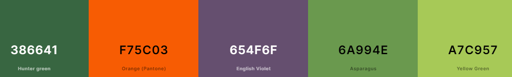

Site Name
La Paz Chamber of Commerce
This name was selected because is the city were I was born.
Site Purpose
The La Paz Chamber of Commerce is a non-profit institution, that promotes business development in La Paz and defends the interest of its members.
Scenarios
Color Schema
Palette URL Hunter Green will be used as a Primary Color for backgrounds
English Violet will be used as Secondary Color for backgrounds
The other colors will be used as Font Colors, also white and black will be used depending on the contrast needed.
Typography
Heading Font: Nixi One
Paragraph Font: Fira Sans